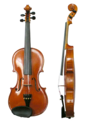
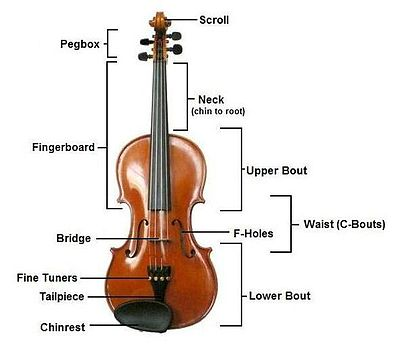

The violin is a wooden string instrument in the violin family. It is the
smallest and highest-pitched instrument in the family in regular use. Smaller
violin-type instruments are known, including the violino piccolo and the kit
violin, but these are virtually unused in the 2010s. The violin typically has
four strings tuned in perfect fifths, and is most commonly played by drawing a
bow across its strings, though it can also be played by plucking the strings
with the fingers (pizzicato).
Violins are important instruments in a wide
variety of musical genres. They are most prominent in the Western classical
tradition and in many varieties of folk music. They are also frequently used in
genres of folk including country music and bluegrass music and in jazz. Electric
violins are used in some forms of rock music; further, the violin has come to be
played in many non-Western music cultures, including Indian music and Iranian
music.
The violin is sometimes informally called a fiddle, particularly in
bluegrass, but this nickname is also used regardless of the type of music played
on it.
The violin was first known in 16th-century Italy, with some further
modifications occurring in the 18th and 19th centuries. In Europe it served as
the basis for stringed instruments used in western classical music, the viola
and the violin.
Violinists and collectors particularly prize the instruments made
by the Stradivari, Guarneri and Amati families from the 16th to the 18th century
in Brescia and Cremona and by Jacob Stainer in Austria.
According to their
reputation, the quality of their sound has defied attempts to explain or equal
it, though this belief is disputed.Great numbers of instruments have come from
the hands of less famous makers, as well as still greater numbers of
mass-produced commercial "trade violins" coming from cottage industries in
places such as Saxony, Bohemia, and Mirecourt.
Many of these trade instruments
were formerly sold by Sears, Roebuck and Co. and other mass merchandisers.
A person who makes or repairs violins is called a luthier or violinmaker. The
parts of a violin are usually made from different types of wood (although
electric violins may not be made of wood at all, since their sound may not be
dependent on specific acoustic characteristics of the instrument's construction)
and on the use of a pickup and an amplifier and speaker). Violins can be strung
with gut, Perlon or other synthetic, or steel strings.
The earliest stringed instruments were mostly plucked (for example, the Greek
lyre). Two-stringed, bowed instruments, played upright and strung and bowed with
horsehair, may have originated in the nomadic equestrian cultures of Central
Asia, in forms closely resembling the modern-day Mongolian Morin huur and the
Kazakh Kobyz.
Similar and variant types were probably disseminated along
East-West trading routes from Asia into the Middle East, and the Byzantine
Empire.
The first makers of violins probably borrowed from various developments of the
Byzantine lira. These included the rebec; the Arabic rebab; the vielle (also
known as the fidel or viuola); and the lira da braccio The violin in its present
form emerged in early 16th-Century Northern Italy.
The earliest pictures of
violins, albeit with three strings, are seen in northern Italy around 1530, at
around the same time as the words "violino" and "vyollon" are seen in Italian
and French documents. One of the earliest explicit descriptions of the
instrument, including its tuning, is from the Epitome musical by Jambe de Fer,
published in Lyon in 1556.By this time, the violin had already begun to spread
throughout Europe.
The violin proved very popular, both among street musicians and the nobility;
the French king Charles IX ordered Andrea Amati to construct 24 violins for him
in 1560.One of these "noble" instruments, the Charles IX, is the oldest
surviving violin.
The finest Renaissance carved and decorated violin in the
world is the Gasparo da Salò (1574 c.) owned by Ferdinand II, Archduke of
Austria and later, from 1841, by the Norwegian virtuoso Ole Bull, who used it
for forty years and thousands of concerts, for its very powerful and beautiful
tone, similar to that of a Guarneri.
"The Messiah" or "Le Messie" (also known as
the "Salabue") made by Antonio Stradivari in 1716 remains pristine. It is now
located in the Ashmolean Museum of Oxford.
Construction and mechanics:

A violin generally consists of a spruce top (the soundboard, also known as the
top plate, table, or belly), maple ribs and back, two endblocks, a neck, a
bridge, a soundpost, four strings, and various fittings, optionally including a
chinrest, which may attach directly over, or to the left of, the tailpiece.
A
distinctive feature of a violin body is its hourglass-like shape and the arching
of its top and back. The hourglass shape comprises two upper bouts, two lower
bouts, and two concave C-bouts at the waist, providing clearance for the bow.
The voice of a violin depends on its shape, the wood it is made from, the
graduation (the thickness profile) of both the top and back, and the varnish
that coats its outside surface.
The varnish and especially the wood continue to
improve with age, making the fixed supply of old violins much sought-after.
The very great majority of glued joints in the instrument use animal hide glue
for a number of reasons: it is capable of making a thinner joint than most other
glues, it is reversible (brittle enough to crack with carefully applied force,
and removable with warm water) when disassembly is needed, and since fresh hide
glue sticks to old hide glue, more original wood can be preserved when repairing
a joint.
More modern glues must be cleaned off entirely for the new joint to be
sound, which generally involves scraping off some wood along with the old glue.
Weaker, diluted glue is usually used to fasten the top to the ribs, and the nut
to the fingerboard, since common repairs involve removing these parts.
The purfling running around the edge of the spruce top provides some protection
against cracks originating at the edge. It also allows the top to flex more
independently of the rib structure.
Painted-on faux purfling on the top is
usually a sign of an inferior instrument. The back and ribs are typically made
of maple, most often with a matching striped figure, referred to as flame,
fiddleback, or tiger stripe.
The neck is usually maple with a flamed figure compatible with that of the ribs
and back. It carries the fingerboard, typically made of ebony, but often some
other wood stained or painted black.
Ebony is the preferred material because of
its hardness, beauty, and superior resistance to wear. Fingerboards are dressed
to a particular transverse curve, and have a small lengthwise "scoop," or
concavity, slightly more pronounced on the lower strings, especially when meant
for gut or synthetic strings.
Some old violins (and some made to appear old) have a grafted scroll, evidenced
by a glue joint between the pegbox and neck. Many authentic old instruments have
had their necks reset to a slightly increased angle, and lengthened by about a
centimeter.
The neck graft allows the original scroll to be kept with a Baroque
violin when bringing its neck into conformance with modern standards.
The bridge is a precisely cut piece of maple that forms the lower anchor point
of the vibrating length of the strings and transmits the vibration of the
strings to the body of the instrument.
Its top curve holds the strings at the
proper height from the fingerboard in an arc, allowing each to be sounded
separately by the bow. The sound post, or soul post, fits precisely inside the
instrument between the back and top, below the treble foot of the bridge, which
it helps support. It also transmits vibrations between the top and the back of
the instrument.

The tailpiece anchors the strings to the lower bout of the violin by means of
the tailgut, which loops around an ebony button called the tailpin (sometimes
confusingly called the endpin, like the cello's spike), which fits into a
tapered hole in the bottom block.
Very often the E string will have a fine
tuning lever worked by a small screw turned by the fingers. Fine tuners may also
be applied to the other strings, especially on a student instrument, and are
sometimes built into the tailpiece.
At the scroll end, the strings wind around the tuning pegs in the pegbox.
Strings usually have a colored silk wrapping at both ends, for identification
and to provide friction against the pegs.
The tapered pegs allow friction to be
increased or decreased by the player applying appropriate pressure along the
axis of the peg while turning it.
Strings:
Strings were first made of sheep gut (commonly known as catgut), or simply gut,
which was stretched, dried, and twisted. In the early years of the 20th century,
strings were made of either gut, silk, aluminum, or steel.
Modern strings may be
gut, solid steel, stranded steel, or various synthetic materials, wound with
various metals, and sometimes plated with silver. Most E strings are unwound,
either plain or gold-plated steel. Currently, violin strings are not made with
gut as much, but many performers use them to achieve a specific sound especially
in historically informed performance.
Strings have a limited lifetime. Apart from obvious things, such as the winding
of a string coming undone from wear, players generally change a string when it
no longer plays true, losing the desired tone, brilliantness and intonation.
String longevity depends on string quality and playing intensity.
Pitch range:
A violin is tuned in fifths, in the notes G3, D4, A4, E5. The lowest note of a
violin, tuned normally, is G3, or G below middle C. (On rare occasions, the
lowest string may be tuned down by as much as a fourth, to D3.)
The highest note
is less well defined E7, the E two octaves above the open string (which is tuned
to E5) may be considered a practical limit for orchestral violin parts, but it
is often possible to play higher, depending on the length of the fingerboard and
the skill of the violinist. Yet higher notes (up to C8) can be sounded using
artificial harmonics.
Acoustics:
The Helmholtz corner traveling back and forth along the string.
The arched shape, the thickness of the wood, and its physical qualities govern
the sound of a violin.
Patterns of the node made by sand or glitter sprinkled on
the plates with the plate vibrated at certain frequencies, called Chladni
patterns, are occasionally used by luthiers to verify their work before
assembling the instrument.
Sizes:
The history of small violins is not well documented. Small violins were made at
least during the late Renaissance Period and quite probably into the Baroque
period that were a fourth higher in pitch than standard violins. These violins
could be used either by children, or by musicians who had parts that were then
outside of the range of standard violins.
It is important to remember that the
chin rest was a relatively recent invention. Without the chin rest, shifting
into upper positions or back down from higher positions often resulted in the
musician losing control of the violin. Additionally, some people have speculated
that these fractional violins could have been used instead of Dancing master's
violins (also called "kits" or "pochettes").
These early fractional violins are
easily confused with children-sized violins, but, if confirmed by an expert, are
highly sought by collectors and museums. During the later part of the 19th
century and early part of the 20th century, makers in Saxony produced many of
these fractional violins.